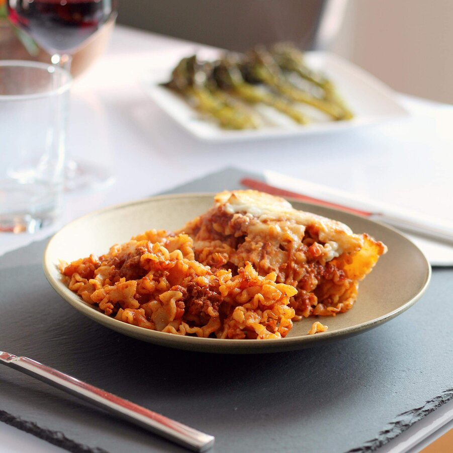

Lasagna

Description
This no-bake skillet lasagna is made right on your stovetop and is a fast and easy alternative to store-bought hamburger mixes!
- 0.5 pound ground beef
- 28 ounce jar spaghetti sauce
- 14.5 ounce can diced tomatoes
- 0.5 chopped onion
- 1 clove minced garlic
- 2 teaspoons dried basil (optional)
- 2 teaspoons dried oregano (optional)
- 1 teaspoon salt
- 1 teaspoon black pepper
- 2 cups dried malfada noodles
- 1 cup shredded mozzarella cheese